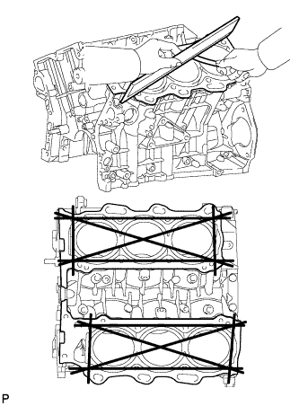
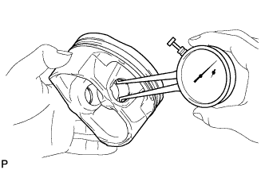

БЛОК ЦИЛИНДРОВ > ПРОВЕРКА |
| 1. ОЧИСТИТЕ БЛОК ЦИЛИНДРОВ В СБОРЕ |
С помощью скребка для прокладок удалите остатки материала прокладки с верхней поверхности блока цилиндров.
Мягкой кистью и растворителем тщательно очистите блок цилиндров.
| 2. ПРОВЕРЬТЕ КОРОБЛЕНИЕ БЛОКА ЦИЛИНДРОВ |
|  |
С помощью прецизионной поверочной линейки и комплекта плоских щупов измерьте коробление поверхностей, соприкасающихся с прокладками головки блока цилиндров.
Проверьте, нет ли на цилиндре вертикальных царапин. При наличии глубоких царапин расточите все 6 цилиндров.
При необходимости замените блок цилиндров.
| 3. ПРОВЕРЬТЕ ОТВЕРСТИЕ ПОД ЦИЛИНДР |
С помощью нутромера измерьте диаметр отверстия под цилиндр в точках А, В и С в осевом и радиальном направлениях.
| *1 | Осевое направление |
| *2 | Направление тяги |
| *3 | Центр |
 | Передняя сторона двигателя |
| 4. ПРОВЕРЬТЕ ЗАЗОР КАНАВКИ КОЛЬЦА |
С помощью комплекта плоских щупов измерьте зазор между новым поршневым кольцом и стенкой канавки кольца.
| Параметр / Устройство | Заданные условия |
| Компрессионное кольцо № 1 | 0,02 - 0,07 мм (0,000787 - 0,00276 дюйма) |
| Компрессионное кольцо № 2 | 0,02 - 0,06 мм (0,000787 - 0,00236 дюйма) |
| Маслосъемное кольцо | 0,07 - 0,15 мм (0,00276 - 0,00590 дюйма) |
| 5. ПРОВЕРЬТЕ ЗАЗОР РАЗРЕЗА ПОРШНЕВОГО КОЛЬЦА |
Вставьте поршневое кольцо в цилиндр.
С помощью поршня протолкните поршневое кольцо так, чтобы оно слегка выступало за нижний предел хода кольца, на расстояние 110 мм (4,33 дюйма) от верхней части блока цилиндров.
С помощью комплекта плоских щупов измерьте зазор разреза.
| Параметр / Устройство | Заданные условия |
| Компрессионное кольцо № 1 | 0,22–0,32 мм (0,00866–0,0126 дюйма) |
| Компрессионное кольцо № 2 | 0,35–0,45 мм (0,0138–0,0177 дюйма) |
| Маслосъемное кольцо (Продольная направляющая) | 0,10–0,40 мм (0,00394–0,0157 дюйма) |
| Параметр / Устройство | Заданные условия |
| Компрессионное кольцо № 1 | 1,0 мм (0,0394 дюйма) |
| Компрессионное кольцо № 2 | 1,1 мм (0,0433 дюйма) |
| Маслосъемное кольцо (Продольная направляющая) | 1,0 мм (0,0394 дюйма) |
| 6. ОЧИСТИТЕ ПОРШЕНЬ С ПАЛЬЦЕМ В СБОРЕ |
Почистите поршень.
Скребком для удаления остатков прокладок снимите нагар с верхней части поршня.
С помощью инструмента для очистки канавок или сломанного кольца очистите поршневые канавки.
Используя растворитель и щетку, тщательно очистите поршень.
| 7. ПРОВЕРЬТЕ МАСЛЯНЫЙ ЗАЗОР ПОРШНЯ |
С помощью микрометра измерьте диаметр поршня на расстоянии 9,6 мм (0,378 дюйма) от нижнего края поршня (см. рисунок).
Отнимите от измеренного диаметра цилиндра измеренный диаметр поршня.
| 8. ПРОВЕРЬТЕ МАСЛЯНЫЙ ЗАЗОР ПОРШНЕВОГО ПАЛЬЦА |
Проверьте все отметки на поршне и шатуне.
| *1 | Метка передней стороны |
| *2 | Положение метки внутреннего диаметра отверстия для поршневого пальца |
| *3 | Метка внутреннего диаметра втулки шатуна |
|  |
С помощью индикатора часового типа для отверстий измерьте внутренний диаметр отверстия под поршневой палец.
| Параметр / Устройство | Заданные условия |
| Метка A | 22,001 - 22,004 мм (0,86618 - 0,86630 дюйма) |
| Метка B | 22,005-22,007 мм (0,86634-0,86642 дюйма) |
| Метка C | 22,008 - 22,010 мм (0,86645 - 0,86653 дюйма) |
Микрометром измерьте диаметр поршневого пальца.
| Точка измерения | Положение поршневого пальца |
| a | 28 мм (1,102 дюйма) от края |
| b | 5 мм (0,197 дюйма) от края |
| Параметр / Устройство | Заданные условия |
| Метка A | 21,997-22,000 мм (0,86602-0,86614 дюйма) |
| Метка B | 22,001-22,003 мм (0,86618-0,86626 дюйма) |
| Метка C | 22,004 - 22,006 мм (0,86630 - 0,86642 дюйма) |
С помощью индикатора часового типа для отверстий измерьте внутренний диаметр втулки шатуна.
| Параметр / Устройство | Заданные условия |
| Метка A | 22,005 - 22,008 мм (0,86634 - 0,86645 дюйма) |
| Метка B | 22,009 - 22,011 мм (0,86649 - 0,86657 дюйма) |
| Метка C | 22,012-22,014 мм (0,86661-0,86669 дюйма) |
Вычтите из измеренного диаметра отверстия под поршневой палец измеренный диаметр поршневого пальца.
Вычтите из измеренного диаметра поршневого пальца измеренный внутренний диаметр втулки.
| 9. ПРОВЕРЬТЕ ШАТУН В СБОРЕ |
Проверьте центровку шатуна с помощью устройства для проверки кривизны шатуна и комплекта плоских щупов.
Проверьте наличие изгибов.
Убедитесь в отсутствии скручивания.
| 10. ПРОВЕРЬТЕ КОЛЕНЧАТЫЙ ВАЛ |
Индикатором часового типа измерьте радиальное биение на центральной шейке.
Микрометром измерьте диаметр каждой коренной шейки.
Для каждой коренной шейки проверьте конусность и овальность, как показано на рисунке.
Микрометром измерьте диаметр каждого штифта коленчатого вала.
Для каждого штифта коленчатого вала проверьте конусность и овальность, как показано на рисунке.
| 11. ПРОВЕРЬТЕ БОЛТ ШАТУНА |
С помощью штангенциркуля измерьте диаметр напряженной части болта.
| *1 | Участок измерения |
| 12. ПРОВЕРЬТЕ УСТАНОВОЧНЫЙ БОЛТ КРЫШКИ ПОДШИПНИКА КОЛЕНЧАТОГО ВАЛА |
С помощью штангенциркуля измерьте наружный диаметр резьбы установочного болта крышки подшипника коленчатого вала.
| *1 | Участок измерения |
| 13. ПРОВЕРЬТЕ МАСЛЯНУЮ ФОРСУНКУ № 1 В СБОРЕ |
Введите в обратный клапан штифт, чтобы проверить, не залип ли он. Если он залип замените штуцер подачи масла.
Нажмите на обратный клапан штифтом и убедитесь, что он перемещается плавно.
Если он двигается не плавно, очистите или замените масляную форсунку.
Закрыв отверстие A, подайте сжатый воздух в отверстие B. Убедитесь, что воздух не выходит через отверстие C. Выполните проверку еще раз, закрыв отверстие B и подав воздух в отверстие A.
Если наблюдаются утечки воздуха, очистите или замените масляную форсунку.
 |
Закрыв отверстие A, нажмите на обратный клапан и подайте сжатый воздух в отверстие B. Убедитесь, что воздух выходит через отверстие C. Выполните проверку еще раз, закрыв отверстие B, нажав на обратный клапан и подав воздух в отверстие A.
Если воздух не выходит через отверстие C, очистите или замените масляную форсунку.